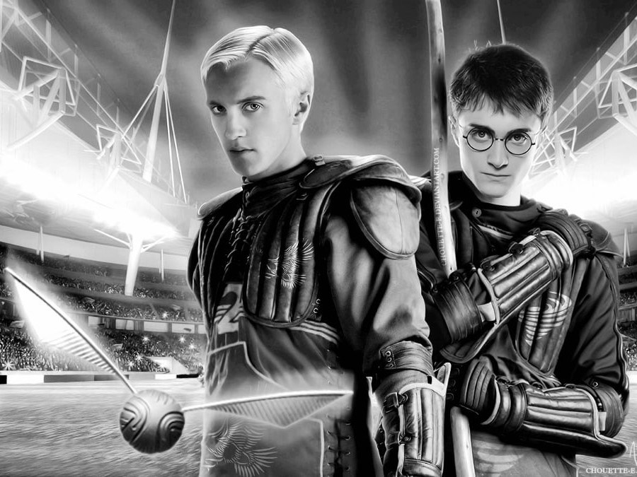
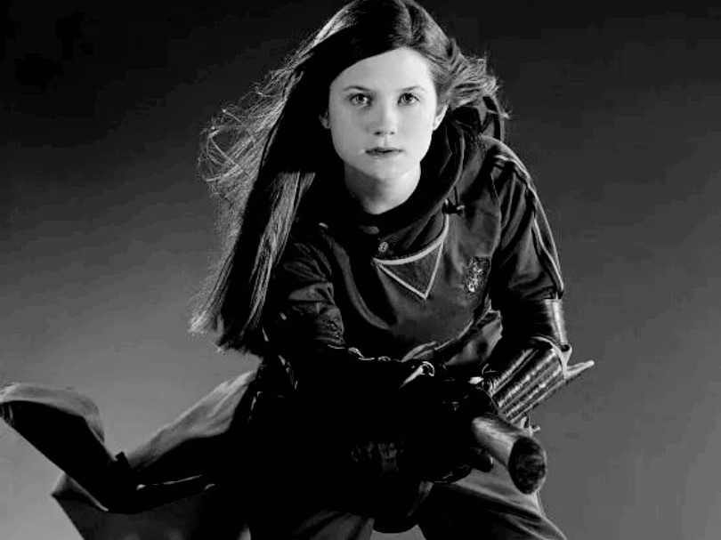
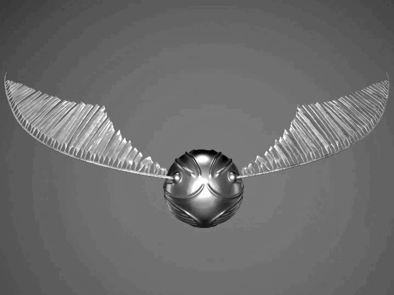

| Главная Новости Галерея Контакты |
|---|

Львы и Змеи зарыли топор войны!?Матчи между враждующими факультетами никогда нельзя было назвать обычными. Но этот перевернул всё с ног на голову. Начать следует с того, что в этом году обе команды очень ответственно подошли к подготовке: составы идеально сбалансированы и качественно подготовлены. Ознакомимся с составом Гриффиндора. Охотницы: Анджелина Джонсон (она же капитан), Кэти Белл и Джинни Уизли, для которой эта игра стала дебютной; Загонщики: братья Фред и Джорж Уизли; Вратарь: Рон Уизли и Ловец: Гарри Поттер В противовес им состав Слизерина. Охотники: Грэхэм Монтегю (он же капитан), Эдриан Пьюси и Кассиус Уоррингтон; Загонщики: Винсент Кребб и Грегори Гойл; Вратарь: Майлз Блетчли и Ловец: Драко Малфой Неудивительно, что при такой подготовке "Львы"" и "Змеи" шли лоб в лоб. Каждая удачно проведённая атака была возвращена не менее удачной контратакой. При таком раскладе ловцы играли с ещё большей ответственностью, но золотого блеска никто из них не мог заметить более 30 минут. Но когда это всё же это случилось, оба ловца устремились к нему практически одновременно. Трибуны замерли в ожидании, как и некоторые члены команд. Поттер и Малфой не отставали друг от друга ни на миллиметр, поэтому снитч одновременно был зажат в руках соперников и было абсолютно не понятно, кто именно первым его задел. Никто ещё не успел придти в себя, как по всему полю раздался треск дерева. Позже оказалось, что Грегори Гойл за несколько секунд до этого запустил в бланжером в Джинни Уизли, отвлёкшуюся на дуэль ловцов. Юная охотница начала стремительно падать. Реакция ловца не подвела и Гарри Поттер успел спикировать за ней. Он поймал Уизли, но при этом сам потерял баланс. Возможно падение только бы увеличило количество человек, если бы не чудо. А этим чудом оказался никто иной, как Слицернский ловец, который в последний момент схватил руку Поттера и помог тому выравнять траекторию. После они вместе доставили младшую Уизли на безопасную землю. В порыве спасения снитч был попросту откинут. На первый взгляд было не понятно как именно закончилась игра, но, как известно, снитчи обладают телесной памятью. Он сам может рассказать, кто именно из Ловцов первым к нему прикоснулся. Поэтому, когда на поверхности проступили маленькие светящиеся буквы, профессор Трюк объявила, что впервые в истории Квиддича двое Ловцов поймали снитч в один и тот же момент. Следовательно, очки за него будут разделены поровну между двумя командами: семьдесят пять Слизерину и семьдесят пять Гриффиндору. А учитывая то, что до этого очки команд были также одинаковые (80:80), была объявлена ничья. Все настолько были поражены чудесным спасением Джинни Уизли и исходом игры, что не сразу заметили неестественную реакцию самих игроков. Гарри, а вслед за ним и вся остальная команда Гриффиндора пожала руку Драко. Вместо обычных упрёков и скандалов, обе команды вполне дружелюбно шли навстречу болельщикам, при этом спокойно переговаривались и даже хвалили друг друга. Казалось бы простой матч повлёк за собой целую цепь событий. Уже вечером оба факультета раздобыли из Хогсмита не только сливочное пиво, но и огневиски и вместе отмечали ничью в выручай комнате. А пьяные близнецы и вовсе предложили демонстративно зарыть топор войны между факультетами. Что с радостью поддержали и остальные. В выручай комнате, появляется всё, что нужно, поэтому утром перед гремучей ивой была видна рукоядь закопанного топора, а к всеобщему шоку профессоров столы Гриффиндора и Слизерина в большом зале сдвинуты вместе. |